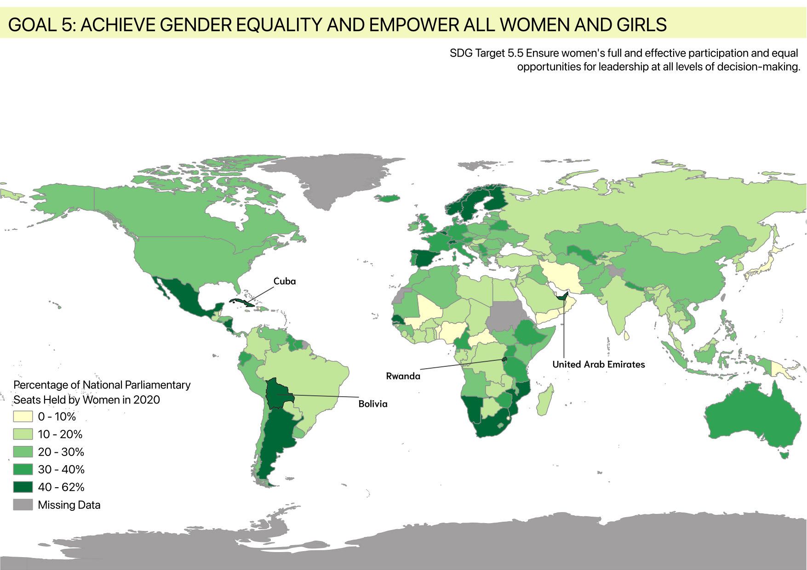

A map showing the global proportion of women in national parliaments to visualize progress toward political gender equality (SDG 5).

This project maps SDG Indicator 5.5.1, the proportion of seats held by women in national parliaments, using 2020 data across UN member states. The goal was to visualize global patterns in political gender equality in a way that is immediately understandable to a general, non-specialist audience.
Choropleth maps are well suited to this kind of comparison, since they let viewers spot regional patterns and outliers, such as Rwanda's unusually high representation, at a single glance without needing to read through tables of numbers.
I began in QGIS by joining the SDG 5.5.1 dataset to a world country shapefile, using field calculations to clean and prepare the attribute data.
I then applied a classification scheme to group countries into meaningful percentage ranges and styled the map using a sequential green colour ramp, with grey representing countries with missing data. After finalizing the design and layout in QGIS, including labels for notable outliers, I exported the data as GeoJSON and built an interactive web version using HTML, CSS, and JavaScript with MapLibre GL.
Hover tooltips were added so users can explore the data interactively rather than viewing a static image.